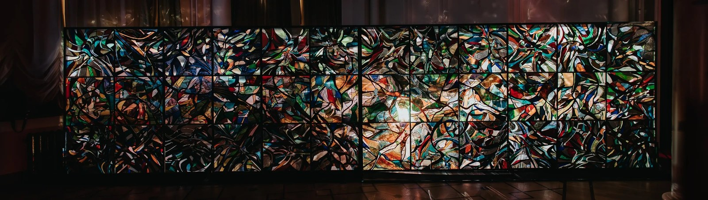

Eine neue Architektursprache im bionischen Stil, verwirklicht im Medium Glas.
Porträt des Künstlers — 2025
Der abstrakte, zeitgenössische Umgang mit Glas und Farbe löst sich von der traditionellen christlichen Symbolik der Glasmalerei, die meist konkrete Darstellungen von Heiligen, biblischen Szenen oder Symbolen zeigt. Doch auch in dieser abstrakten Form bleibt die Suche nach möglicher Symbolik und Bedeutung durch einen innovativen Umgang mit Symbolen relevant.
Zeitgenössische Studien zur Glasmalerei ermöglichen es, den Einfluss der Abstraktion auf Wahrnehmung und Interpretation zu untersuchen. Wandelnde Stile und Techniken können die ästhetische und spirituelle Wahrnehmung prägen und neue Formen für zeitgenössische Kunst und Architektur eröffnen.
Besonders wichtig ist bei abstrakter Glasmalerei das persönliche Eintauchen des Betrachters in das Werk. Durch die Offenheit der Abstraktion kann jeder darin eigene Symbole, Archetypen oder Deutungen finden — und so wird jede Betrachtung zu einer einzigartigen Erfahrung.
Arthemiis Weg begann vor mehr als zehn Jahren, als er an der Universität Psychologie mit Schwerpunkt Kunsttherapie studierte. Dort entwickelte er sein eigenes Konzept der „freien Linie“ — einen intuitiven, ungehemmten Zugang zum Zeichnen, der seine gesamte künstlerische Praxis prägen und ein neues architektonisches Paradigma begründen sollte. Die ersten Zeichnungen, die aus dieser Methode hervorgingen, ähnelten auffallend Glasmalereien — und genau diese unerwartete Ähnlichkeit öffnete die Tür zu einem völlig neuen Medium.
Seine erste Arbeit in Glas, ausgeführt in der klassischen Tiffany-Technik, markierte den Beginn einer eigenen Serie im Format 60 × 60 Zentimeter. Was als Erkundung begann, entwickelte sich bald zu einem ehrgeizigen ersten Hauptwerk: einer vollständigen Sammlung von 36 Glasbildern mit einer Gesamtfläche von 7,2 × 1,8 Metern.

36 Glasmalerei-Paneele — 7,2 × 1,8 m
Nach zwei Jahren der Meisterung der Tiffany-Technik wandte sich Arthemii einem völlig neuen Gebiet zu: dreidimensionalen architektonischen Objekten. Arbeiten dieser Art sind nahezu beispiellos — solche Projekte sind in der Öffentlichkeit kaum zu finden. Durch beharrliches Experimentieren entwickelte Arthemii eigene architektonische Formen und technologische Ansätze, die ganz aus der Praxis heraus entstanden sind und nicht aus etablierten Methoden.
Getreu seiner künstlerischen Philosophie entstehen diese architektonischen Werke ohne Vorskizzen oder statische Planung — mit Formen, die abstrakt, futuristisch und vollkommen selbstbestimmt sind. Dennoch bleiben sie eng mit den zweidimensionalen Arbeiten (klassischer Glasmalerei) verbunden, aus denen seine Praxis hervorging: Wenn Licht durch diese dreidimensionalen Objekte fällt, geben die Schatten, die sie auf eine Fläche werfen, mit bemerkenswerter Präzision genau dieselben Kompositionen wieder wie seine Glasbilder. Im Kern ist es dieselbe Bildsprache — dasselbe Zusammenspiel von Linie, Licht und Form —, befreit in die dritte Dimension.
Heute erweitert Arthemii die Grenzen seiner Praxis weiter und wagt sich in die Architektur des Lichts selbst vor. Derzeit entwickelt er kinetische Prismen und erschließt das Feld der Installationskunst — er erforscht, wie Licht, Bewegung und Raum zu immersiven Umgebungen verwoben werden können. Daneben sucht er aktiv die Zusammenarbeit über Disziplinen hinweg — mit Theater, Clubkultur und Live-Performance —, bringt seine Bildsprache in einen Dialog mit anderen Kunstformen und definiert die Kontexte neu, in denen sein Werk erlebt werden kann.
"
Durch die Offenheit der Abstraktion kann jeder Betrachter darin eigene Symbole, Archetypen oder Deutungen finden — und so wird jede Betrachtung zu einer einzigartigen Erfahrung.
— Arthemii Ionaere
Philosophie
Die Kunst des Eintauchens
Drei Säulen der künstlerischen Praxis, die jedes Werk leiten und die Beziehung zwischen Kunstwerk und Betrachter bestimmen.
01
Persönliches Eintauchen
Jeder Betrachter findet im abstrakten Werk eigene Symbole, Archetypen und Deutungen. Jede Begegnung ist einzigartig und zutiefst persönlich. Das Kunstwerk wird zum Spiegel der inneren Welt des Betrachters — zu einem Raum der Selbstreflexion und kontemplativen Versenkung.
02
Abstrakte Innovation
Die Abkehr von traditionellen, gegenständlichen Darstellungen eröffnet neue Wege durch einen innovativen Umgang mit Farbe, Licht und geometrischer Abstraktion. Die Glasmalerei wird zur Experimentierplattform, auf der neue Bildsprachen erforscht und entwickelt werden.
03
Spirituelle Wahrnehmung
Wandelnde Stile und Techniken beeinflussen die ästhetische und spirituelle Wahrnehmung und bieten neue Formen für zeitgenössische Kunst und Architektur. Glas wird zum Medium zwischen Lichtbewusstsein und räumlichem Erleben.